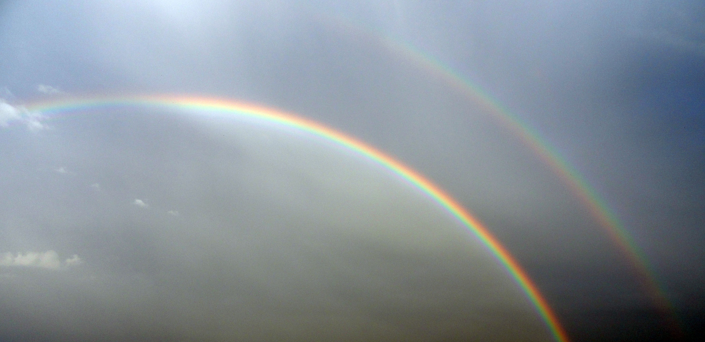

How a raindrop
makes a rainbow
Sunlight bends into a drop, bounces inside, and bends again as it leaves. Follow one colour through the drop, then see where that colour appears in the sky.
Inside the drop
Where the rays leave
The dot follows your ray. The diamond marks where the curve flattens and rays gather.
From a drop to the sky


Measurements and assumptions
The drop has radius R. The ray enters at impact parameter b, and the incidence angle is i = arcsin(b/R). Snell’s law gives the angle in water r = arcsin(sin(i)/n). With p internal reflections, the turning angle is D = pπ + 2[i − (p + 1)r]. The bow corresponds to the stationary point of D and has angular radius |π − D| around the point opposite the Sun.
Water’s index varies with wavelength using the 20 °C measurements of Daimon and Masumura. Fresnel coefficients give the fraction of an unpolarised incident ray that follows the selected path. The sky diagram shows the calculated angles and approximate display colours for 400–700 nm.
The model uses spherical, clear water drops, parallel sunlight and air with refractive index 1. Its ray optics omit absorption, diffraction, drop deformation and interference. The sky view assumes a level horizon with illuminated drops available in every direction and depicts angular position alone. NOAA’s explanation of double rainbows